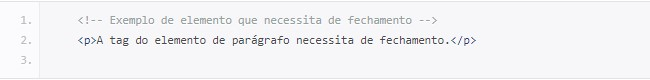

Primero precisamos entender o que significa client side e server side, para, a partir daí entendermos como funciona essa comunicação:
Client Side (lado cliente): É todo o conjunto de códigos e programações que se acessa do computador do usuário(cliente), ou seja, toda a informação está no computador, seja ela temporária ou não.
Server Side (Lado Servidor): É um computador onde os sites são hospedados, onde os dados de acesso, os formulários, endereços e a maior parte das informações são processadas e guardadas.
A comunicação entre os dois é feita por meio de protocolos de rede, como TCP/IP, e é geralmente realizada pela internet ou por uma rede privada. Assim, o modelo é altamente escalável, flexível e seguro, o que permite as empresas distribuírem seus serviços e recursos em vários dispositivos e plataformas.
HTML é a Linguagem de Marcação de Hipertexto é uma linguagem de computador que compõe a maior parte das páginas da internet e dos aplicativos online. Um hipertexto é um texto usado para fazer referência a outros textos, enquanto uma linguagem de marcação é composta por uma série de marcações que dizem para os servidores da web qual é o estilo e a estrutura de um documento.
O HTML não é considerado uma linguagem de programação, já que ele não pode criar funcionalidades dinâmicas. Ao invés disso, com o HTML, os usuários podem criar e estruturar seções, parágrafos e links usando elementos, tags e atributos.
O documento HTML sempre inicia com o que chamamos de estrutura básica. Esta estrutura é quase que imutável. Sempre será dessa forma e você sempre, sempre começará seu HTML começando por esse código. Geralmente os editores como o Sublime Text já tem atalhos para iniciar os documentos HTMLs com essa estrutura, logo, você não precisa se preocupar em decorá-la, mas é bom que faça. Veja abaixo como ela se inicia:

É possível compreender o documento em HTML de uma maneira muito simples, através de uma divisão de blocos das tags essenciais, conforme a a seguinte estrutura:
Tags são o conjunto de caracteres que formam um elemento, ou seja, quando nos referenciamos à Tag "p" estamos falando disso: "<"p">"".
Existem dois tipos de Tags, as que necessitam de fechamento e as que não necessitam de fechamento.
Para as que necessitam de fechamento, utilizamos o sinal de menor ( < ), seguido do nome do elemento e o sinal de maior ( > ) para abertura. Para fechamento, utilizamos o sinal de menor ( < ), seguido de barra ( / ), nome do elemento e o sinal de maior ( > ).
Atributos são informações que passamos na Tag para que ela se comporte da maneira esperada. Existem atributos globais (que funcionam em todas as Tags) e específicos (que são direcionados para cada Tag, através de especificação).
Os Atributos possuem nome e um valor, existem Atributos que você vai usar praticamente sempre e existem outros que serão mais raros.
A sintaxe de Atributos é muito simples, porém, por mais simples que seja é sempre bom ter em mente boas práticas para que se tenha qualidade e fácil manutenção em seu HTML.